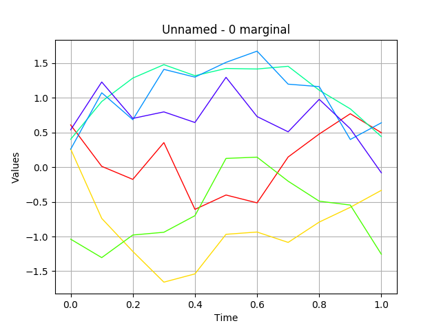

Create a gaussian process from a cov. model¶
In this basic example we are going to build a gaussian process from its covariance model.
In [1]:
from __future__ import print_function
import openturns as ot
In [2]:
# define a covariance model
defaultDimension = 1
# Amplitude values
amplitude = [1.0]*defaultDimension
# Scale values
scale = [1.0]*defaultDimension
# Covariance model
myModel = ot.AbsoluteExponential(scale, amplitude)
In [3]:
# define a mesh
tmin = 0.0
step = 0.1
n = 11
myTimeGrid = ot.RegularGrid(tmin, step, n)
In [4]:
# create the process
process = ot.GaussianProcess(myModel, myTimeGrid)
print(process)
GaussianProcess(trend=[x0]->[0.0], covariance=AbsoluteExponential(scale=[1], amplitude=[1]))
In [5]:
# draw a sample
sample = process.getSample(6)
sample.drawMarginal(0)
Out[5]:
